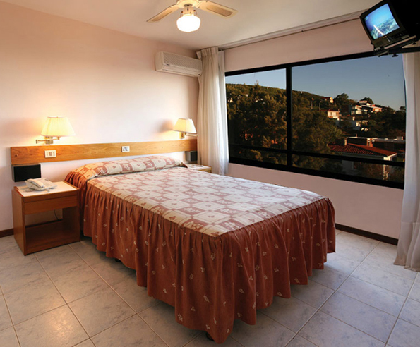

HABITACIÓN STANDARD
Nuestras habitaciones standard están ubicadas en los laterales que dan al parque del hotel, y están diseñadas para que usted disfrute de las mayores comodidades, encontrándose en ellas, la superior calidad en servicios de hotelería. LCD 32 pulgadas, wifi en todo el hotel, aire acondicionado frío-calor, secadores de cabello, pisos de cerámicos, frigobar, cofres de seguridad, room service las 24hs.
- Desayuno buffet
- Cochera cubierta
- Wi Fi en todo el hotel
- Carpa compartida (hasta 6 pax) en Balneario con Traslados (cupo limitado) (Ene/Feb)
- Acceso al Health Club
- Gimnasio